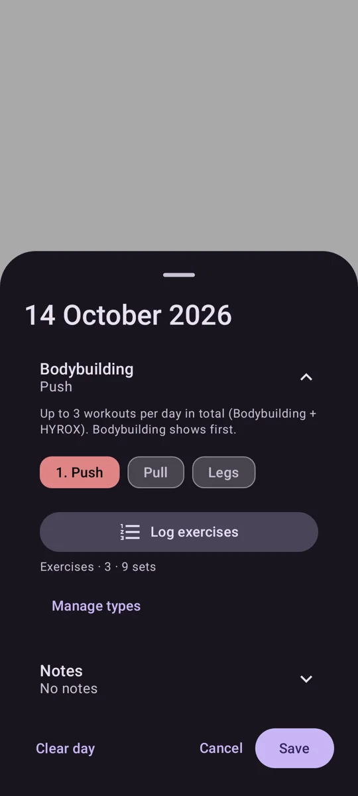
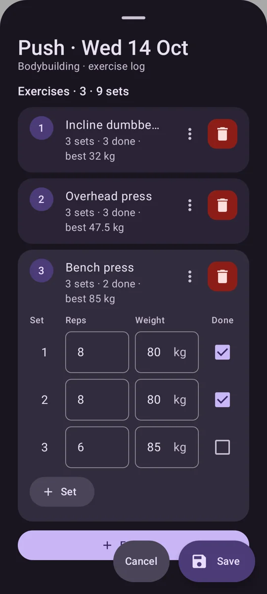

Local workout calendar · No account required · Dark theme only · Updated for version 2.3.0
Liftloq keeps your workout plan on your device. Mark days on the calendar, manage workout types, plan and time HYROX workouts, and optionally track supplement spending — without signing in.
1. Mark a workout on the calendar
Open Calendar (home).
Tap a day (or the add button). The day sheet has collapsible Bodybuilding, HYROX workouts and Notes sections.
Pick up to three entries in total (Bodybuilding types and HYROX workouts combined). At 3, the other picks are disabled until you deselect one. HYROX rows have a checkbox: a picked row says Tap to unselect; tap it again to remove it.
Tap Save. Nothing is stored until you save.
The day shows one colour band per entry: Bodybuilding first, then HYROX.
Calendar: tap a day to open it. Each day shows up to 3 colour bands; names appear with 1–2 entries.Day sheet: HYROX workouts with checkboxes; the picked one shows Tap to unselect. At 3 of 3 picked, the rest is disabled.
2. Add and remove Bodybuilding types
Open the menu (☰) → Bodybuilding. Or on a day sheet, tap Manage types.
To add: tap +, enter a name, pick a color, then tap Save.
To remove: tap the trash icon on a type, then confirm Delete.
Bodybuilding: delete with trash, add with +.
3. Advanced bodybuilding (exercise log)
Bodybuilding has two modes. Simple (default) works exactly as before: you mark a day with a workout type. Advanced also lets you log the exercises, sets, reps and kg of that day.
Turn it on in Settings → Modes: under Bodybuilding, tap Advanced. The switch is only shown while Bodybuilding is on.
On a day, open the Bodybuilding section, pick a type, then tap Log exercises. The day is saved and the exercise log opens.
Tap + Exercise and pick one from the list, grouped by muscle (Chest, Back, Shoulders, Biceps, Triceps, Legs, Calves, Core). The new exercise opens with one set; fill in reps and kg, tick Done, and add more with + Set. Sets, reps and kg are optional.
Tap an exercise card to open or close it. Use ⋮ to move it up or down, and the red trash button to remove it. Tap Save to keep the log, or Cancel to discard the changes.
Missing an exercise? At the bottom of the list, tap + Custom exercise, enter a name, choose the muscle group and tap Save. It is added to the log and listed in its group from then on.
Switching back to Simple only hides the log; nothing is deleted. Clear day in Advanced mode also clears that day’s exercise log.
Settings → Modes: Simple | Advanced under Bodybuilding.

Day sheet in Advanced mode: Log exercises under the selected type.

Exercise log: one card open with its sets; + Set adds a row.+ Exercise: exercises grouped by muscle.+ Custom exercise: Name is required.
4. Track supplements (Supps money pit)
Open the menu (☰) → Supps money pit.
Tap + to add a purchase (name, price, date), then tap Save.
Set currency under Settings (same menu).
See Total spent on supplements and the Money burnt list.
Don't need it? Turn off Supps money pit in Settings → Modes; the page leaves the menu and the swipe cycle, and your purchases are kept.
Supps money pit: tap + to add a purchase, then Save.
5. HYROX β
Builder: menu (☰) → HYROX (beta) → +. Name the workout, pick a colour and division, then tap + Segment to pick a run or station from the list (sorted into Runs and Stations). While the list is still empty, + Full race next to it adds the 16 official segments. A new segment opens ready to edit (distance or reps, weight); tap any card to open it, use ⋮ → Move up / Move down to reorder, and the red trash to delete it (you confirm first). The list scrolls under the floating Cancel and Save buttons (bottom right). If the name is empty, Save scrolls back to the Name field and shows Name required. When editing an existing workout, Delete is next to the title.
Delete: on the HYROX list, tap the red trash on a workout (or Delete inside the editor). Confirm — sessions are removed and the workout is cleared from every calendar day. Official race is not re-seeded after you delete it.
Plan it: on a day sheet, open HYROX workouts and pick one or more, then Save.
Start HYROX: on a day with a planned HYROX workout, a Start HYROX button appears above the add button. With several planned, it opens a menu to choose one.
Race mode: a wavy progress bar and the big total sit on top, then a Current card (segment and its time), a Next card (with your best split when known) and your last laps vs best. Tap Next split at the end of each segment. Pause freezes the clock (paused time is not counted; the wave goes flat), Resume continues, the undo button removes the last split. All three sit in one connected row at the bottom. Finish (top bar) asks for confirmation. Then review and Save; results show with an OK button back to the calendar.
Stats: Stats → HYROX β shows History (tap a session for its results), best splits and station decay. History is newest first; sessions on the same day stay in the order you did them, also after an export/import.
Your HYROX workouts, e.g. 1 segment or 16 segments.Delete confirm: sessions and calendar days are counted before you confirm.New workout: + Full race and + Add segment side by side. Full race is only offered while the list is empty.Add segment: Runs and Stations, each with its default distance, reps and weight.Segment cards: number, name, summary, ⋮ to reorder and the red delete; Cancel and Save float at the bottom right.Start HYROX with two workouts planned today.Race mode: wavy progress, total, Current and Next cards, recent laps vs your best; Undo · Pause · Next split at the bottom.Paused: the clock is frozen, the wave is flat and Next split is disabled until you Resume.Results after saving: This session / Trend tabs, with OK back to the calendar.Stats → HYROX β: History on top, then templates and best splits.
6. Stats
Menu (☰) → Stats. The bottom toggle has Days since (opens first), Overview and HYROX β (only while HYROX is on).
Days since shows how long ago you last did each type: green 0–3 days, yellow 4–6, red 7 or more (or never).
Overview shows this week or month by type; HYROX β shows History, templates and best splits.
Swipe up to go to the next tab: Days since → Overview → HYROX β → Days since. Long tabs scroll normally first; the tab only changes when you keep swiping up at the bottom. The toggle follows.
Stats opens on Days since; swipe up for Overview and HYROX β.
7. Settings: sections and toggles
Menu (☰) → Settings. Sections: General (language, currency, motivation quote), Modes, Card order, Workout plan and About.
Appearance: Liftloq is dark-only. The app and both home-screen widgets always use the dark theme (with your wallpaper colours on Android 12+), even when the phone is set to light mode.
Modes: turn Bodybuilding or HYROX (beta) off to hide everything for that mode (calendar entries, legend, stats, menu pages). Nothing is deleted; turning it back on restores it. One of the two must stay on. Supps money pit has its own switch, separate from that rule: off hides the Supps page from the menu and swipe cycle (purchases are kept).
Card order: use the ↑ / ↓ buttons to set the order of the cards in the menu and in the swipe cycle. Changes apply right away. Cards switched off in Modes are dimmed and marked Hidden; you can still move them, and they are skipped until you turn them back on. Settings is always last in the menu and is never part of the swipe cycle.
A language change is applied when you tap Save (bottom right).
Settings → Modes: Bodybuilding, HYROX (beta) and Supps money pit.Settings → Card order: menu and swipe order; Settings always last.Workout plan (export/import) and About.
8. Export / import
Settings → Workout plan → Export workout plan saves a JSON backup (types, days, notes, supplements, HYROX data, your card order and Modes switches, and the Advanced bodybuilding log with your custom exercises).
Import workout plan replaces your data from such a file, after a confirmation. Days with more than 3 entries keep the first 3. Files from older versions have no card settings, so the default order is used and all cards are turned on. They also have no Advanced bodybuilding data: Bodybuilding is set to Simple and your exercise log on this phone is kept.
Tip: Swipe left below the calendar to cycle through the cards in your Card order (default: Calendar → Bodybuilding → HYROX β → Stats → Supps money pit). Pages for a mode that is off are skipped. Settings stays in the menu only.